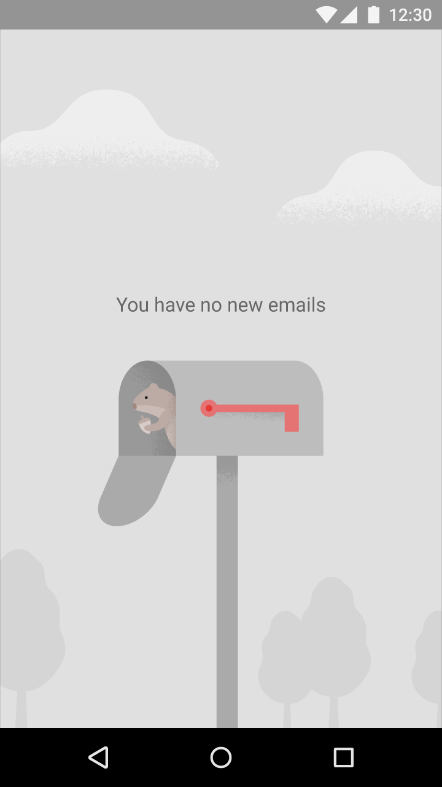
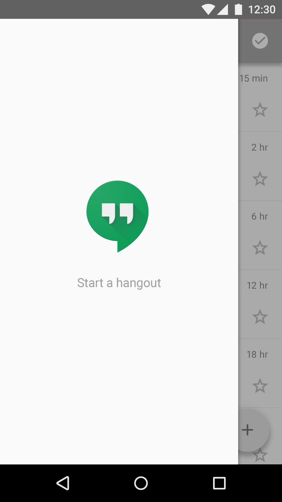

The most basic empty state displays a non-interactive image and a text tagline.
Use an image that:
- Is subtle and neutral with respect to the background
- Conveys the purpose and potential of the app in a lively way, such as your app's icon
Include a tagline that:
- Has a positive tone
- Is consistent with your brand
- Conveys the purpose of the app without appearing to be actionable

Do.
The image is neutral and clearly part of the background. The tagline conveys the purpose of the app without coming across as a call to action.

Don't.
The image is bright and the tagline is worded like a call to action, which may encourage users to touch either thinking a hangout will start.